2
初登場
▶
2
初登場
▶
編集でベストプレイだけを繋ぎ合わせれば、マリオ64のRTA世界記録に勝てるんじゃね！？
東海オンエア · 785,666再生 · 公開 11/12
2
初登場
▶
東海オンエア · 785,666再生 · 公開 11/12
 4
→
▶
4
→
▶
キヨ。 · 726,872再生 · 公開 11/12
 5
初登場
▶
5
初登場
▶
なにわ男子 · 99,794再生 · 公開 11/12
 6
▼4
▶
6
▼4
▶
モンスト（モンスターストライク）公式 · 575,418再生 · 公開 11/12
 7
▲24
▶
7
▲24
▶
WAY2WAY · 43,652再生 · 公開 11/12
 8
▼2
▶
8
▼2
▶
今日ポケch. · 285,537再生 · 公開 11/12
 10
▲2
▶
10
▲2
▶
ドズル社 · 320,814再生 · 公開 11/12
 12
▲2
▶
12
▲2
▶
牛沢 · 355,345再生 · 公開 11/12
 13
▼2
▶
13
▼2
▶
矢沢永吉 Eikichi Yazawa Channel · 74,534再生 · 公開 11/12
 14
▲4
▶
14
▲4
▶
GON · 424,567再生 · 公開 11/12
 16
初登場
▶
16
初登場
▶
Subaru Ch. 大空スバル · 472,288再生 · 公開 11/13
 18
初登場
▶
18
初登場
▶
Kuzuha Channel · 289,392再生 · 公開 11/13
 20
▼12
▶
20
▼12
▶
ウォーターチャレンジ · 243,499再生 · 公開 11/12
 22
▼2
▶
22
▼2
▶
がみくん · 254,724再生 · 公開 11/12
 24
▼14
▶
24
▼14
▶
シュート。 · 276,533再生 · 公開 11/12
 26
初登場
▶
26
初登場
▶
キャベツの人【ゲーム紹介】 · 164,172再生 · 公開 11/12
 28
▼6
▶
28
▼6
▶
マエスケ · 176,492再生 · 公開 11/12
 29
初登場
▶
29
初登場
▶
けいちゃん / Keichan · 74,000再生 · 公開 11/12
 30
▼14
▶
30
▼14
▶
Okayu Ch. 猫又おかゆ · 1,323,183再生 · 公開 11/11
 31
初登場
▶
31
初登場
▶
ナナヲアカリ OFFICIAL · 53,714再生 · 公開 11/12
 32
▲14
▶
32
▲14
▶
【V.I.P】 · 138,948再生 · 公開 11/12
 34
初登場
▶
34
初登場
▶
令和ちゃんねる · 110,058再生 · 公開 11/12
 36
初登場
▶
36
初登場
▶
もこうの実況 · 109,585再生 · 公開 11/12
 38
▲4
▶
38
▲4
▶
YY channel · 132,178再生 · 公開 11/12
 40
▼16
▶
40
▼16
▶
ちょぶり【イーフト解説】 · 158,295再生 · 公開 11/12
 42
▼12
▶
42
▼12
▶
KUNの50人クラフト · 120,997再生 · 公開 11/12
 44
初登場
▶
44
初登場
▶
Pekora Ch. 兎田ぺこら · 309,227再生 · 公開 11/12
 45
▼18
▶
45
▼18
▶
03- Performance · 106,966再生 · 公開 11/11
 46
初登場
▶
46
初登場
▶
ポッキー · 123,768再生 · 公開 11/12
 47
▼24
▶
47
▼24
▶
1theK Originals - 원더케이 오리지널 · 483,109再生 · 公開 11/11
 48
初登場
▶
48
初登場
▶
鈴原るる【にじさんじ所属】 · 110,812再生 · 公開 11/13
 50
初登場
▶
50
初登場
▶
中村悠一 · 216,911再生 · 公開 11/12
 1
→
▶
1
→
▶
ふぉ〜ゆ〜ちゅ〜ぶ · 1,104,686再生 · 公開 11/11
 3
→
▶
3
→
▶
乃木坂46 OFFICIAL YouTube CHANNEL · 1,162,017再生 · 公開 11/11
 9
▲12
▶
9
▲12
▶
Kohjiya · 78,237再生 · 公開 11/12
 11
▲6
▶
11
▲6
▶
サンボマスター · 69,798再生 · 公開 11/12
 15
▼10
▶
15
▼10
▶
YOASOBI · 368,584再生 · 公開 11/11
 17
初登場
▶
17
初登場
▶
AKINA NAKAMORI OFFICIAL · 66,532再生 · 公開 11/12
 19
▼12
▶
19
▼12
▶
優里ちゃんねる【公式】 · 914,523再生 · 公開 11/10
 21
初登場
▶
21
初登場
▶
TMNETWORK · 62,829再生 · 公開 11/12
 23
▼14
▶
23
▼14
▶
CUTIE STREET · 95,914再生 · 公開 11/11
 25
▼12
▶
25
▼12
▶
あいみょん · 302,406再生 · 公開 11/11
 27
初登場
▶
27
初登場
▶
Kento Nakajima - Topic · 3,422再生 · 公開 11/13
 33
▼18
▶
33
▼18
▶
BE:FIRST Official · 463,149再生 · 公開 11/10
 35
▼6
▶
35
▼6
▶
森口博子 オフィシャル YouTube チャンネル · 486,643再生 · 公開 11/11
 37
初登場
▶
37
初登場
▶
THE FIRST TAKE · 171,609再生 · 公開 11/12
 39
→
▶
39
→
▶
♡くままの伝説ch♡ · 52,196再生 · 公開 11/12
 41
▼22
▶
41
▼22
▶
D.O. - Topic · 289,004再生 · 公開 11/11
 43
初登場
▶
43
初登場
▶
VESPERBELL_YM · 58,265再生 · 公開 11/12
 49
▼24
▶
49
▼24
▶
Yudai Takenaka 竹中雄大 · 91,068再生 · 公開 11/11
 900万回
NEW
900万回
NEW
ニコニコニュース · 12 Nov · @haruka___iy ♥1,124,825
 843万回
NEW
843万回
NEW
ニコニコニュース · 11 Nov · @agonagasugi_ ♥60,854
ライブドアニュース · 11 Nov
Yahoo!ニュース · 12 Nov · @makoto6017 ♥34,459
朝日新聞 · 11 Nov · @bcbcbcbc.bic ♥87,299
 158万回
NEW
158万回
NEW
ライブドアニュース · 12 Nov
 117万回
NEW
117万回
NEW
オリコンニュース · 12 Nov
千葉テレビ放送株式会社 · 12 Nov
 28万回
NEW
28万回
NEW
LIMO | くらしとお金の経済メディア · 12 Nov
Excite エキサイト · 12 Nov
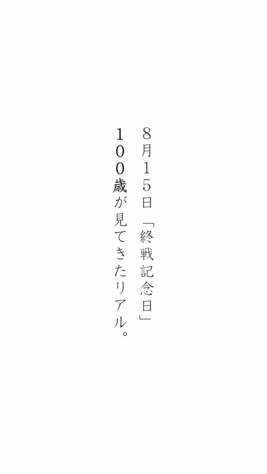
NEWPR TIMES · 12 Nov · @century_words ♥153,549
オリコンニュース · 11 Nov
ニコニコニュース · 12 Nov · TikTok
Unisba Media · 11 Nov
Excite エキサイト · 12 Nov
BuzzFeed · 12 Nov
号外NET 所沢市 · 12 Nov · @kogashi_tokorozawa ♥16
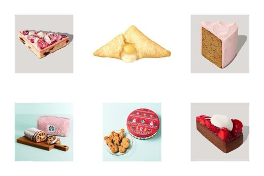
NEWもぐナビ · 12 Nov
 NEW
NEW
ニコニコニュース · 12 Nov
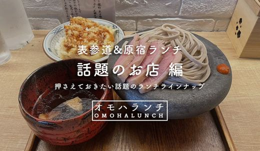
NEWOMOHARAREAL · 12 Nov
Excite エキサイト · 12 Nov
Infoseek · 12 Nov
西スポWEB OTTO! · 12 Nov · @wakatsukichinatsu ♥15,755
TRILL · 12 Nov

東洋経済オンライン · 12 Nov
au Webポータル · 12 Nov
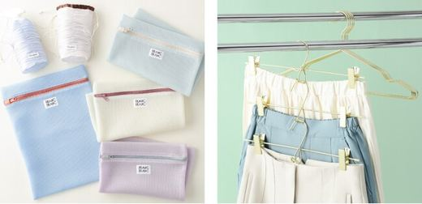
NEWExcite エキサイト · 12 Nov
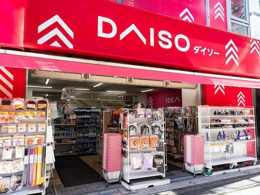
NEWInfoseek · 12 Nov
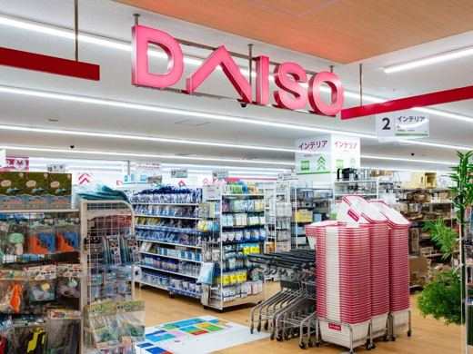
NEWTRILL · 12 Nov
All About ニュース · 12 Nov
grapee.jp · 12 Nov
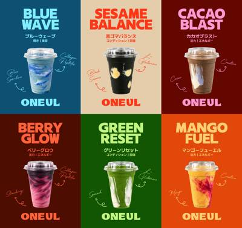
11/12 20:45 🗼 赤坂株式会社RENOTIONのプレスリリース 一杯に、今日を。ブルースピルリナの青、マンゴーの黄、ほうれん草の緑、黒ごまの黒。素材の
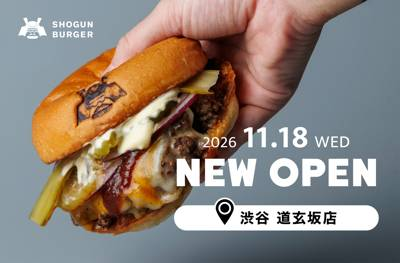
11/12 16:18 🗼 渋谷株式会社大将軍のプレスリリース SHOGUN BURGER 27店舗目となる道玄坂店がオープン！渋谷のシンボル「ハチ公」にちなん
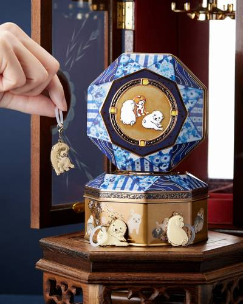
11/12 15:00 🗼 東京株式会社ビーディ・ラボのプレスリリース 2026年11月28日（土）から東京都江戸東京博物館で開催される特別展「円山応挙 リアル
有限会社エスティピィディファーストゲートのプレスリリース 年間約500組の誕生日を祝うポークハンバーグ専門店から、新たな記念日の
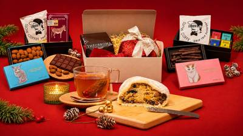
11/12 14:00 🗼 東京株式会社UPDATERのプレスリリース 売上の一部を、カカオ農家の発酵箱の導入支援に活用！11月12日からEXPO会場・TADO
株式会社マッシュホールディングスのプレスリリース ハインツを象徴するトマトケチャップとイエローマスタードのボトルアートを落とし込
モロゾフ株式会社のプレスリリース 2026年11月25日（水）～12月1日（火） 洋菓子メーカー、モロゾフ株式会社（神戸市東灘区
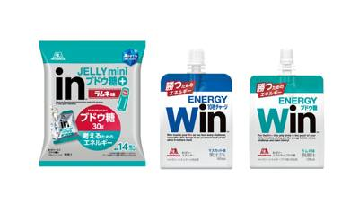
11/12 11:00 🗼 東京森永製菓株式会社のプレスリリース 森永製菓株式会社（東京都港区芝浦、代表取締役社長 COO・森 信也）は、「ｉｎゼリー」ブラン
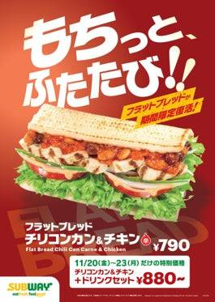
11/12 11:00 🗼 東京ワタミ株式会社のプレスリリース 〜寒い季節にピッタリのあったかスープ2種も同時発売！〜 WATAMI FAST CASUAL
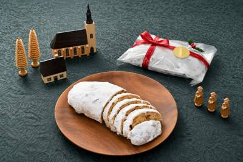
11/12 10:10 🗼 銀座株式会社モーリのプレスリリース 発酵バターを二度染み込ませた、しっとり贅沢な味わい。洋酒漬けフルーツとナッツが香る、クリスマスだ
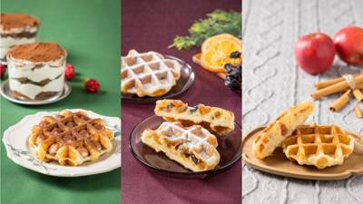
11/12 10:00 🗼 神奈川荒井商事株式会社のプレスリリース 11月16日～昨年人気の『シュトーレン』＆新商品『ティラミス』、1月3日～『アップルシナモン』
 11/13 07:30
❓ 不明
11/13 07:30
❓ 不明
株式会社講談社のプレスリリース おとなの週末 2026年12月号 今号の特集は「バーに遊ぶ。」。人生をほんの少しだけれど、煌めく
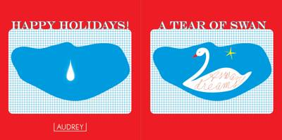
11/12 19:06 ❓ 不明株式会社プレジィールのプレスリリース いちごのお菓子専門店「AUDREY（オードリー）」は、今年のクリスマスを「オードリークリス
株式会社グローバルプロダクトプランニングのプレスリリース 忙しい毎日に自然素材のドリンクでゆったりとしたひと時を 日本の風情をゆ
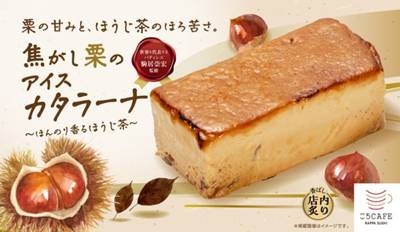
11/12 16:00 🌐 全国カッパ・クリエイト株式会社のプレスリリース ２０２６年１１月２６日（木）より、かっぱ寿司全店にて期間限定販売 コロワイドグルー
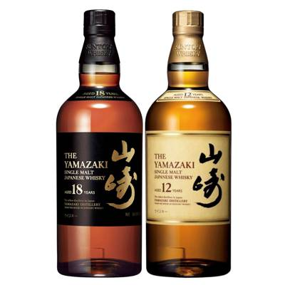
11/12 15:00 🚄 宮崎株式会社アップライジングのプレスリリース 超大吉に「山崎18年＋山崎12年」、大大吉に「白州18年＋白州12年」——1口2本確定
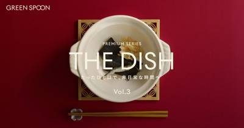
11/12 15:00 ❓ 不明株式会社Greenspoonのプレスリリース 〜何百通りもの出汁を試して開発。仙台牛と香茸、鴨と柚子を楽しむ鍋2種を11月18日
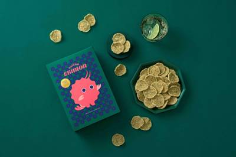
11/12 15:00 🚄 大阪株式会社坂角総本舖のプレスリリース おいしい楽しいミラクル起こすモンスターが、阪神百貨店梅田本店で一周年の快進撃！ 〈OSAKA
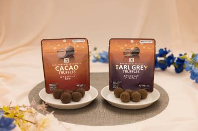
11/12 15:00 🌐 全国株式会社セブン‐イレブン・ジャパンのプレスリリース 〜上品な味わいの濃厚トリュフを〜 株式会社セブン‐イレブン・ジャパン（本社
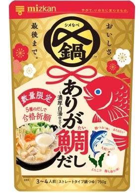
11/12 14:00 ❓ 不明株式会社Mizkan Holdingsのプレスリリース ～受験生の声から生まれた合格祈願鍋つゆ～ 株式会社Mizkan（本社：
森トラスト・ホテルズ＆リゾーツ株式会社のプレスリリース 期間：2026年12月1日（火）～2027年2月28日（日） 本リリース
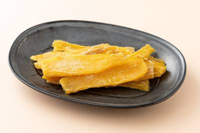
11/12 14:00 🚄 宮崎株式会社ビオ・マーケットのプレスリリース 100％有機野菜の会員制宅配事業「ビオ・マルシェの宅配」を展開する株式会社ビオ・マーケ
株式会社ドトールコーヒーのプレスリリース 株式会社ドトールコーヒー（本社：東京都渋谷区／代表取締役社長：星野 正則）は、全国のエ
株式会社ブルボンのプレスリリース 株式会社ブルボン(本社：新潟県柏崎市、代表取締役社長：吉田 匡慶)は、いちごのおいしさを取り入
Gastroduce Japan株式会社のプレスリリース TikTok Shop支援60店舗・月間流通総額3.5億円のTSPが、
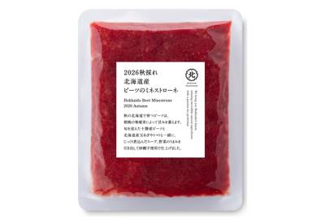
11/12 13:00 🚄 北海道株式会社久原本家のプレスリリース 久原本家グループ(福岡県糟屋郡久山町 社主：河邉哲司)の株式会社 久原本家 北海道(北海道
株式会社ブルボンのプレスリリース ～ 甘じょっぱさと食感が織りなす心地よい味わい ～ 株式会社ブルボン(本社：新潟県柏崎市、代表
株式会社イワタダイナースのプレスリリース Lサイズのピザならフライドチキン3本とフレンチフライポテトLがついてなんと1320円も
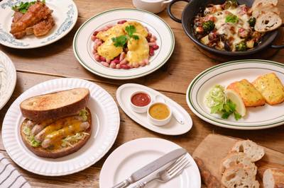
11/12 13:00 ❓ 不明株式会社ケー・アイ・エスのプレスリリース 創業95年・老舗スパイスメーカーKISでは、「SPICE KINGDOM」ブランドから
株式会社丸亀製麺のプレスリリース 打ち立て・茹でたてのおいしさはそのまま、もっと気軽に“自分好みの一杯”を 丸亀製麺 新TVCM
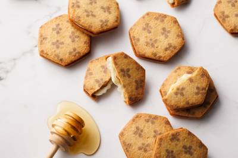
11/12 12:10 🚄 福岡株式会社九十九島グループのプレスリリース 《年末ギフトに》新商品『ハニーバタークッキー』が入った詰合せも12月1日～新登場。 バ
株式会社ドトールコーヒーのプレスリリース 株式会社ドトールコーヒー（本社：東京都渋谷区／代表取締役社長：星野 正則）は、株式会社
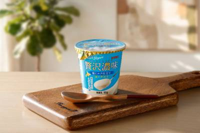
11/12 11:59 ❓ 不明サツラク農業協同組合のプレスリリース サツラク農業協同組合は「贅沢濃味 塩ミルク仕立て90g」を10月1日（木）より発売しまし
グレイス株式会社のプレスリリース 新ドリンクのテーマは「冬キュン 苺とピスタチオ」 台湾スイーツと美食の専門店「台湾甜商店（たい
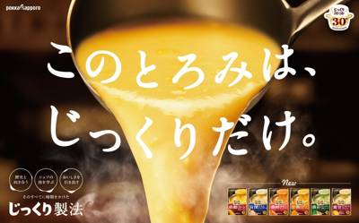
11/12 11:10 ❓ 不明サッポロビール株式会社のプレスリリース ポッカサッポロフード＆ビバレッジ株式会社（代表取締役社長：佐藤雅志、本社：愛知県名古屋市
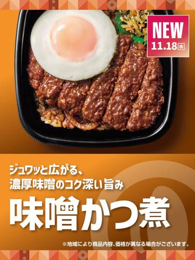
11/12 11:00 ❓ 不明株式会社プレナスのプレスリリース 11.18(水)より新発売 株式会社プレナスは、持ち帰り弁当の「Hotto Motto (ほっ
株式会社サンマルクカフェのプレスリリース 冬の福袋初！12月1日(火)10時よりオンライン販売も開始 株式会社サンマルクカフェ
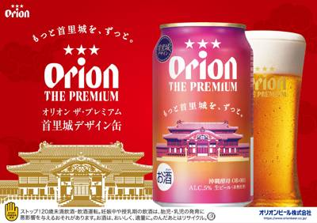
11/12 11:00 🚄 沖縄オリオンビール株式会社のプレスリリース ―「もっと首里城を、ずっと。」の想いを込めて―
株式会社プレナスのプレスリリース 1位は「3種の本醸造醤油をブレンドした甘辛だれ」 株式会社プレナスは、定食レストラン「やよい
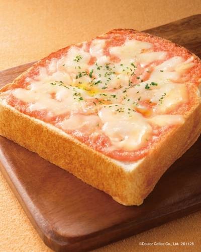
11/12 11:00 ❓ 不明株式会社ドトールコーヒーのプレスリリース 株式会社ドトールコーヒー（本社：東京都渋谷区／代表取締役社長：星野 正則）は、ドトール
株式会社吉野家ホールディングスのプレスリリース -先着5,000個限定で干支「未」入り超小盛丼をプレゼント- 株式会社吉野家（本
ダノンジャパン株式会社のプレスリリース ダノンジャパン株式会社（本社：東京都目黒区、代表取締役社長：ロドリゴ・リマ）は、100倍
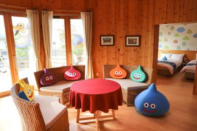
11/12 11:00 🚄 淡路島株式会社ニジゲンノモリのプレスリリース 12月3日（木）開始 ▲スライムのコクーン客室 兵庫県立淡路島公園アニメパーク「ニジゲン
ほっともっとのプレスリリース 株式会社プレナスは、持ち帰り弁当の「Hotto Motto (ほっともっと)」を、2026年10月
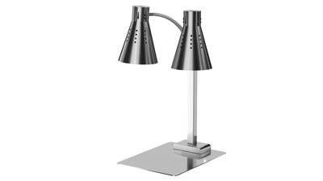
11/12 10:30 ❓ 不明株式会社サンテックコーポレーションのプレスリリース 「せっかくの料理が冷めてしまっている…」そんなお客様の落胆をゼロに。 新発売
モロゾフ株式会社のプレスリリース 2026年11月19日（木）～11月23日（月・祝） モロゾフ株式会社（神戸市東灘区）は、創立
株式会社オールハーツ・カンパニーのプレスリリース ～「パティスリーピネード」店舗にて2026年12月1日（火）より発売開始～ 全
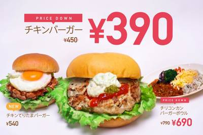
11/12 10:10 ❓ 不明ユナイテッド＆コレクティブ株式会社のプレスリリース こだわりのバーガーを、もっと日常に。チリコンカンバーガーボウルも100円値下
サントリーホールディングス株式会社のプレスリリース サントリー（株）は、１０月１３日（火）に新発売した「金麦〈豊潤〉」の販売数量
株式会社グレープストーンのプレスリリース 株式会社グレープストーン(本社：東京都中央区銀座)が展開する｢東京ばな奈」は『ポケモン
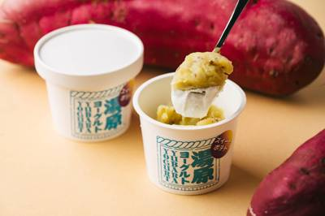
11/12 10:00 🚄 岡山株式会社OMOIのプレスリリース 寒い湯原で育ち「キュアリング貯蔵」で甘さを引き出したさつまいもと水切りヨーグルトの2層仕立て。
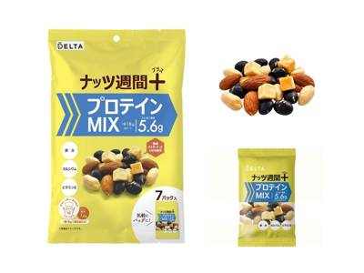
11/12 10:00 ❓ 不明株式会社デルタインターナショナルのプレスリリース 1日1袋で、手軽にたんぱく質補給。 ナッツとドライフルーツの専門商社、株式会社
株式会社アキタフーズのプレスリリース 〜賞味期限21日の新鮮な卵をお手頃な価格でご提供〜 株式会社アキタフーズ(本社：広島県福山
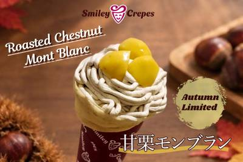
11/12 10:00 🌐 全国株式会社ホスピタリティオペレーションズのプレスリリース ～モンブランの華やかさと、栗の味わいを楽しむ一品～ 全国でホテル、旅館、
株式会社ダスキンのプレスリリース ミスドネットオーダーにて先行予約を12月11日（金）より地域別に順次スタート！地域別先行予約の
ブラウンフォーマンジャパン株式会社のプレスリリース GO BEYOND CAMPAIGNを12月31日まで実施中 アメリカに本社
株式会社パンチョのプレスリリース 「ナポリストよ、近くにいるならこの私を感じてみろ！」赤いナポリタンが3倍赤くなる（かもしれない
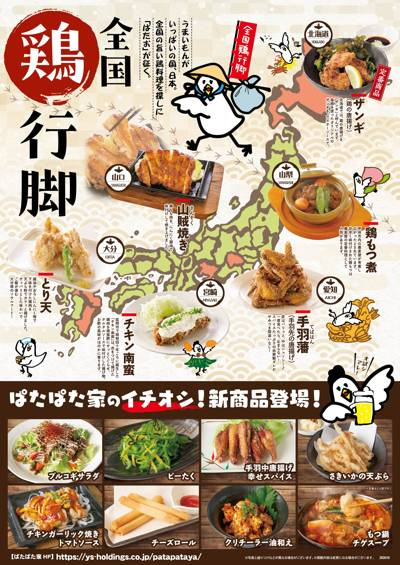
11/12 12:17 🗼 東京株式会社焼肉坂井ホールディングスのプレスリリース ～ これからの季節にぴったりの旨辛メニューや定番の手羽中唐揚げには新フレーバー
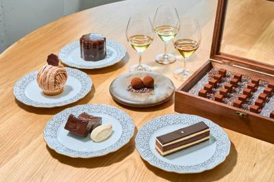
11/12 10:00 🗼 鎌倉メゾンカカオ株式会社のプレスリリース 2025年11月、創業の地・鎌倉に誕生したメゾンカカオ新本店。11月21日に迎える1周年へ
株式会社テンポスホールディングスのプレスリリース ぷりぷり食感が魅力の「海老しゃぶ鍋」や、肉と魚介の旨みが詰まった「ちゃんこ鍋」
株式会社ニジゲンノモリのプレスリリース 11月14日（土）より販売開始 ▲「おしりぷりぷりピザまん」 淡路島アニメパーク「ニジゲ
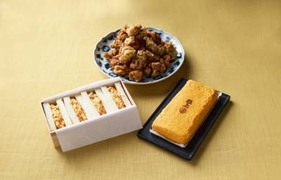
11/12 16:30 🗼 池袋株式会社DDグループのプレスリリース 〜日常の食卓を彩る惣菜から希少な「比内地鶏」や「夢王」の卵を使ったプレミアムな手土産まで。
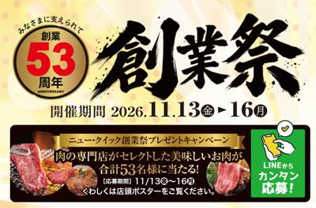
11/12 14:00 🗼 神奈川株式会社ニュー･クイックのプレスリリース 実施期間：2026年11月13日（金）～11月16日（月） 全国に81店舗の精肉専門店
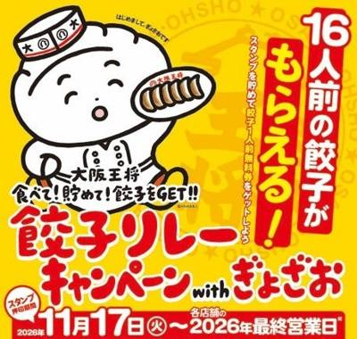
11/12 10:30 🗼 東京株式会社イートアンドホールディングスのプレスリリース ～11月17日より全国の店舗でスタート～ 株式会社大阪王将（東京ヘッドオフ
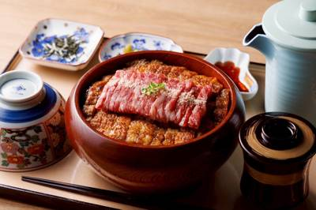
11/13 07:59 🚄 名古屋株式会社Ａｃｔ Ｃｏｍｍｕｎｉｔｙのプレスリリース ブランド13店舗目は直営店。うなぎ・特選和牛・天ぷらの3種のひつまぶしと、お
コープデリ生活協同組合連合会のプレスリリース ～JA全農が連携し、同米穀部公式X「NO RICE NO LIFE」で11月15日
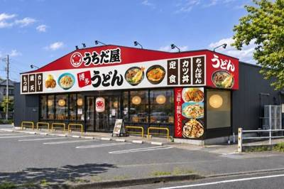
11/12 14:20 🚄 福岡株式会社 うちだ屋のプレスリリース 堀江貴文が経営戦略アドバイザーを務める「こむぎの」グループ傘下でリブランディングを推進。1年
株式会社ロイズコンフェクトのプレスリリース 北海道札幌市のチョコレートメーカー「株式会社ロイズコンフェクト」は、ロイズが出店する
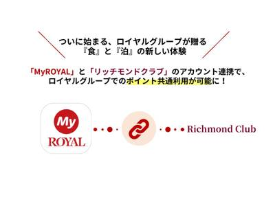
11/12 13:00 ❓ 不明ロイヤルホールディングス株式会社のプレスリリース ～簡単なアカウント連携のみで、もっと自由に、もっと便利に～ ロイヤルホールデ
株式会社ビーケー・ジャパンのプレスリリース 【期間限定】11月16日（月）～11月20日（金） 株式会社ビーケー・ジャパン（本
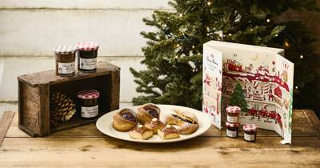
11/12 11:00 ❓ 不明株式会社ベイクルーズのプレスリリース 株式会社ベイクルーズ（本社：東京都渋谷区、取締役社長：古峯 正佳）が運営する、オリジナルブ
TPS株式会社のプレスリリース 全国50店舗体制へ拡大中！自分専用の一杯が作れるスタイルで支持される大分発の「福恩麻辣湯」が山形
JA全農の産直通販JAタウンのプレスリリース ～「国消国産キャンペーン」で「お客様送料負担なし」！～ ＪＡ全農が運営する産地直
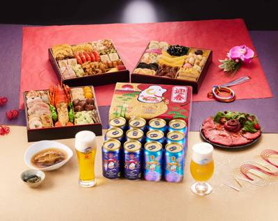
11/12 10:35 🌐 全国株式会社ナカノモードエンタープライズのプレスリリース 【おせち×ビールで贅沢な年末年始】年末年始を華やかに彩る「板前魂×サントリ
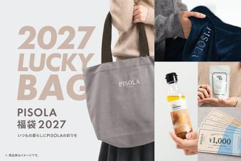
11/12 10:00 ❓ 不明株式会社ピソラのプレスリリース 初めてお届けする、PISOLAならではの福袋。日常にくつろぎのひとときを届ける特別なセット 近畿
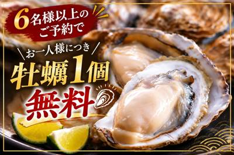
11/12 09:40 🚄 愛知ウッドデザインパーク株式会社のプレスリリース 2026年12月31日までの特別企画！6名様以上のご予約で宮城県産大粒牡蠣を人数分
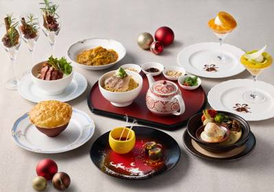
11/12 14:00 🗼 みなとみらい東急ホテルズ＆リゾーツ株式会社のプレスリリース 横浜ベイホテル東急（横浜市西区みなとみらい・総支配人 八木 進午）中国料理「スー
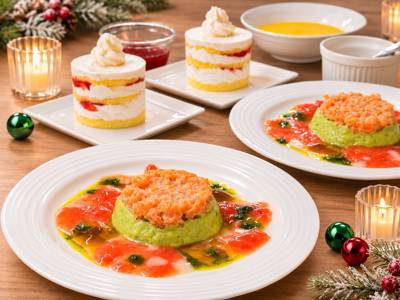
11/12 11:40 🗼 荻窪NSリヤンド株式会社のプレスリリース 11月18日（最終試食会）・12月23日（当日）の取材を受け付けます 神経難病・がん末期に
株式会社物語コーポレーションのプレスリリース 株式会社物語コーポレーション(本社:愛知県豊橋市/代表取締役社長:加藤 央之)が全
株式会社 和多屋別荘のプレスリリース 有明海の恵みと、生産者が受け継ぐ技に出会う。初摘みの高級焼海苔から、60年続く伝統の味、色
日本ホテル株式会社のプレスリリース JR東日本のコード決済サービス「teppay」スタート記念 ホテルメトロポリタン エドモント
株式会社エヌアセットのプレスリリース 〜多世代が交流する“まちのもう一つの食卓”を目指して〜 神奈川県川崎市高津区（溝の口エリア
株式会社日本香堂 銀座らん月事業部のプレスリリース 創業80年の老舗日本料理店が手がける、年に一度の特別な松阪牛料理。すき焼き・
株式会社 東京ドームホテルのプレスリリース 大切な人との記念日、仕事帰りのお食事や、自分へのご褒美に。2時間制フリードリンク付き
株式会社なとりのプレスリリース 株式会社なとり（本社：東京都北区 会長兼社長：名取三郎）は、2026年11月20日（金）、東京交
株式会社シュクレイのプレスリリース 今年お世話になった方へ感謝を込めて、年始の大切な方へのご挨拶に。11月10日より予約受付開始
株式会社ICONIC LOCATIONS JAPANのプレスリリース 株式会社ICONIC LOCATIONS JAPAN(代表
 11/12 14:00
🗼 横浜
11/12 14:00
🗼 横浜
株式会社ジーバーのプレスリリース ～鉄道・介護・食の力を掛け合わせ、シニアの活躍と多世代交流が生まれる新たな地域コミュニティーの
株式会社ユーハイムのプレスリリース ヤン・クヴルー イメージ 株式会社ユーハイム(本社：神戸市中央区港島中町7-7-4 代表取締
株式会社movのプレスリリース いま訪日客に人気の飲食店TOP30を発表！ インバウンドビジネスメディア「訪日ラボ」及び 店舗向
株式会社ポトマックのプレスリリース 恵比寿のビストロ「TOOTH TOOTH TOKYO」は、2025年12月24日（木）～25
I．L．S株式会社のプレスリリース 1972年創業の老舗焼肉店が東京進出から4年。とろりとした食感と海老の甘みが魅力の韓国料理が
株式会社 EURO SWEETSのプレスリリース 店内厨房で作りあげる特別なバウムクーヘンを提供 株式会社EURO SWEETS
株式会社エルティーアールのプレスリリース アッシュ・英二・ショーター、彼らが見る“景色”や“光景”、彼らが共有した“時間”にフォ
一般社団法人あいのてのプレスリリース 佐原という古い町並みのある一角にレトロカフェ『お芋ってBETSUBARA』(所在地:千葉県
カリフォルニアくるみ協会のプレスリリース ～糖質を意識した食生活に取り入れやすい、栄養豊富なくるみのレシピを紹介～ 11月のおす
株式会社DDグループのプレスリリース こたつに入りながら、都心のテラスで熱々の鍋とお酒を楽しむ冬限定のアウトドアダイニング 株式
井筒まい泉株式会社のプレスリリース ～JR八王子駅直結、お買い物に便利な駅ビルにまい泉が装い新たに登場～ 井筒まい泉株式会社（本
株式会社ゴンチャ ジャパンのプレスリリース 11月19日（木）秋葉原UDX 1F にオープンいたします 株式会社ゴンチャ ジャ
東京貿易ホールディングス株式会社のプレスリリース 東京貿易グループのTBグローバルテクノロジーズ株式会社（東京都中央区京橋、代表
キンプトン新宿東京のプレスリリース ラグジュアリーライフスタイルホテルのキンプトン新宿東京では、「World Luxury Aw
 11/12 10:28
🗼 品川
11/12 10:28
🗼 品川
株式会社ケイシイシイのプレスリリース JR新宿駅構内で展開しているブランド「果実とバターcanarina」がエキュート品川に期間
株式会社Collective&Delightのプレスリリース 〜12月17日でいよいよ8周年！部位ごとに違う旨味を食べ比
株式会社 赤福のプレスリリース 「芋どらやき」「栗和み」が東京駅初登場。栗どらやきなど季節の和洋菓子もそろいます 五十鈴茶屋のど
株式会社MatchaEducationCenterのプレスリリース 産地・品種・栽培・製造・品質まで、抹茶の価値を正しく理解・評
インフィニア株式会社のプレスリリース ～「119番の日」に防災知識を学び、地域の火災予防・防災意識向上に向けた取り組みを実施～
株式会社ニュー・オータニのプレスリリース 今年から受け取り日を拡大！予約限定でクリスマスイブ・当日の受け取りが可能に！ ホテルニ
KOZOホールディングス株式会社のプレスリリース KOZOホールディングス株式会社の子会社である株式会社ＴＢＪ（本社：東京都中央
サイプレス・ホールディングス株式会社のプレスリリース 運営は株式会社イクタツ。職人が炭火で焼き上げる本格焼き鳥を、印西の毎日の食
株式会社グローバルダイニングのプレスリリース 〜極上の夜景・美食に加え、ダンサーやDJによる生パフォーマンスが織りなす非日常の夜
ネッスー株式会社のプレスリリース 「未利用食品の活用推進コンソーシアム」設立発表から約5カ月で、参画する食品メーカーは8社から1
 11/13 08:30
🚄 石川
11/13 08:30
🚄 石川
株式会社ホテル金沢のプレスリリース 能登の恵みを活かした本格セイボリーも充実。殻付き牡蠣グラタンや芳醇な「ビーフティー」で温まる
 11/13 08:30
🚄 淡路島
11/13 08:30
🚄 淡路島
全国農業協同組合連合会 兵庫県本部のプレスリリース JA全農兵庫・美菜恋来屋・コープこうべが連携し、地産地消を推進します！ JA
株式会社エニキャリのプレスリリース 店舗間の商品・食材配送からお客様へのお届けまで、飲食店における「anyCo Biz」の活用事
株式会社アオキスーパーのプレスリリース 株式会社アオキスーパーは、2026年11月15日より東芝テック株式会社が提供するレシー
ReportPrime（レポートプライム）のプレスリリース 2025年の世界市場は約1,480億米ドル、日本の乳業企業にも関わる
株式会社１０のプレスリリース 持ち帰り・貯蓄などを選ぶ25％、上質な食材を選ぶ15％。店内飲食は61％が『減りそうな店はない』と
 11/12 20:10
🚄 京都
11/12 20:10
🚄 京都
株式会社丹友商事のプレスリリース 蟹刺し、焼きガニ、茹でガニ、蟹鍋、雑炊。12品にわたる豪華フルコースをご提供 天橋立荘 別館
株式会社上野忠のプレスリリース ～ よもぎの花言葉を広める取り組み。東京・大阪・京都・富山・岡山・長崎・福岡などのお店で、大切な
株式会社ポトマックのプレスリリース 神戸旧居留地の洋館サロン「Salon15 TOOTH TOOTH 旧神戸居留地十五番館」にて
株式会社ポトマックのプレスリリース 四季の移ろいを感じる果実たっぷりのタルトや、しっかり焼きこんだ素朴なお菓子たちをお届けしてい
株式会社フォンスのプレスリリース ＜新登場＞2～3人にちょうどいいサイズのケーキから、よりおいしくリニューアルしたローストチキン
ちゅらゆーな株式会社のプレスリリース ちゅらゆーな株式会社（本社：沖縄県那覇市、代表取締役：近藤ゆうな、以下、「ちゅらゆーな」）
株式会社サン・フレッシュグループホールディングスのプレスリリース 【日本初】茨城県民の日に“朝どれ玉里（たまり）れんこん”を大丸
株式会社シダックスフードサービスのプレスリリース ～深刻化する人手不足を背景に導入が加速 給食運営効率化と利用者満足を両立～ オ
両備ホールディングス株式会社のプレスリリース 杜の街グレース（岡山市北区下石井）では、2026年11月17日（火）から12月13
株式会社澤井珈琲のプレスリリース 11月13日（金）から3つの飲み比べセットを展開。本セールでは、ドリップバッグ200杯分の飲み
 11/12 16:03
🚄 九州
11/12 16:03
🚄 九州
サントリーホールディングス株式会社のプレスリリース ― 「ザ・プレミアム・モルツ」の仕込開始、１２月中旬に出荷へ ― サントリー
株式会社山本商店のプレスリリース カファレル神戸北野本店 は「クリスマスケーキコレクション2026」11月9日(月)よりカファレ
株式会社LOCUS BRiDGEのプレスリリース 総合大賞は兵庫県新温泉町の「但馬鴨」鴨鍋セット、準大賞は岩手県大船渡市の「三陸
株式会社シュクレイのプレスリリース 今年お世話になった方へ感謝を込めて、年始の大切な方へのご挨拶に。11月10日より予約受付開始
株式会社円居のプレスリリース 卓越した調理技能とシャルキュトリの製造技術、国際コンクールで示した日本人料理人の高い技術力が評価さ
相鉄グループのプレスリリース 瀬谷駅前の商業施設にシニアが主役の幅広い世代が活躍する場を提供し、地域コミュニティーを活性化 相鉄
Aegean Exporters’ Associationsのプレスリリース ミシュラン星付きシェフ、オスマン・セルダルオール氏
株式会社ニュー・オータニのプレスリリース 地上約100mの絶景とともに、「スーパーシリーズ」2種といちごショートの豪華3種食べ比
一般社団法人アニマルウェルフェア・コーポレート・パートナーズ・ジャパンのプレスリリース 〜CIWF「ファーム・アニマル・ウェルフ
ダイコク電機株式会社のプレスリリース 〜抹茶の豊かな旨み×もちバブルの「抹茶もちバブルラテ」をはじめ、多彩な日本茶を揃え、新しい
株式会社JR東日本クロスステーションのプレスリリース 【そばいち二八】【いろり庵】【そばじ】【六本木 蕎香・仙川 蕎香】 株式
Karakami HOTELS＆RESORTS株式会社のプレスリリース ご家族で分かち合う美食体験。お子様のご宿泊・ダイニング予
株式会社クリエイト・レストランツ・ホールディングスのプレスリリース ～少人数から大人数まで対応可能な個室・お座敷完備。一年の締め
株式会社ベイシアのプレスリリース ～ 地域に寄り添う品揃えとサービスで、毎日のお買い物をもっと便利に楽しく ～ 株式会社ベイシ
株式会社アークミールのプレスリリース 株式会社アークミール（本社：埼玉県さいたま市、代表取締役社長：柳 先）が運営する「ステーキ
UNCHI株式会社のプレスリリース 中之島本店で親しまれてきたメニューを一部アレンジ。大阪・泉佐野市の中庄交差点にロードサイド店
アイコニア・ホスピタリティ株式会社のプレスリリース 亀の井ホテル赤穂（所在地：兵庫県赤穂市、支配人：内藤久嗣）は、瀬戸内海を望
株式会社AIworkerのプレスリリース 業務用・PB・OEMの見積を、原材料の相場や取引先ごとの条件に合わせて早く出すために、
株式会社BAKEのプレスリリース 2026年12月26日（土）より販売開始 公式オンラインショップでも、お得な限定セットが登場
株式会社ストライプインターナショナルのプレスリリース 毎年人気のホリデークッキー缶も同日オンライン販売を開始 株式会社ストライプ
株式会社FoundingBaseのプレスリリース 豊後高田の海が育んだこだわり真牡蠣を堪能。波音とともに味わう、長崎鼻の冬の風物
株式会社長寿荘のプレスリリース 2026年12月30日(水)から2027年1月3日(日)の期間限定コース 『ホテルテラスザガーデ
株式会社ナラティブテクノロジーズのプレスリリース ～約50年の歴史を有する流通小売業の販促支援のパイオニア企業・アイドマグループ
ホリイフードサービス株式会社のプレスリリース ～お客様の声をきっかけに誕生！AIによる画像判定で、どの店舗でも変わらないクオリテ
ウッドデザインパーク株式会社のプレスリリース ウッドデザインパーク栄店（栄駅1番出口から徒歩1分）は、宮城県産の大粒牡蠣、ホタテ
株式会社コズミックホールディングスのプレスリリース 〜目玉は“一頭からわずかしか取れない希少部位”「ミスジステーキ」を特別奉仕〜
嗣味のプレスリリース 私達、嗣味(つぐみ)は、「福岡の風土を味わう」をコンセプトに、クエや天然とらふぐ料理、水炊き店や、甘味処、
株式会社安楽亭のプレスリリース 焼肉レストラン安楽亭（本社：埼玉県さいたま市）は、「1129いい肉月間」の第1弾として、2026
新潟市のプレスリリース 新潟が誇る食品産業の「３つの戦略」～グローバル展開、商品開発、DX～３つの視点から、フードビジネスの未来
きみのフルーツのプレスリリース SNS反響45万PV・リポスト2,500件超の拡散を背に。“統計に載らない小型農機具の盗難被害”
株式会社グレープストーンのプレスリリース 2026年11月18日(水)～11月29日(日)まで 株式会社グレープストーン(本社：
Proviande Genossenschaftのプレスリリース 日程：2026年11月18日（水）～19日（木） スイス産食肉
Banyan Tree Japan有限会社のプレスリリース 京都・三条の好立地！友人や仲間との集まりに。炭火料理と2時間フリーフ
モロゾフ株式会社のプレスリリース 2026年11月20日（金）リニューアルオープン 洋菓子メーカー、モロゾフ株式会社（神戸市東灘
株式会社うかいのプレスリリース 2026年11月12日（木）からWEBサイトで先行予約開始 東京・神奈川を中心にレストランや洋菓
公益財団法人 安藤スポーツ・食文化振興財団のプレスリリース 世界トップクラスの大学・研究機関での研究を1人最大3,000万円支援
株式会社TSPのプレスリリース ～物件探しから内装工事まで、幅広い業種の開業・出店を一貫サポート TSP、「ミセツク」と業務提携
株式会社一蘭のプレスリリース 〜遠く離れたお孫さんや大切なご家族へ、LINEやメールで手軽に贈れる「一蘭のラーメン」〜 株式会
株式会社クインビーガーデンのプレスリリース プロの菓子・パン職人による作品が集結。 11月11日(水)にカナダ大使館で表彰式を開
株式会社アトムのプレスリリース 穏やかな潮が育てた濃厚な旨み、かつ時冬の定番メニューが今年も登場 コロワイドグループの株式会社ア
株式会社Mizkan Holdingsのプレスリリース ～置くだけで始められる、新しいオフィスの福利厚生～ ミツカングループの株
株式会社大将軍のプレスリリース 2026年11月12日付で創業時の屋号へ商号変更を実施 株式会社大将軍ロゴ 飲食店経営、フランチ
住友不動産ヴィラフォンテーヌ株式会社のプレスリリース 東京有明と羽田空港で冬にぴったり、心も体も温まる料理を12月1日から提供開
株式会社BAKEのプレスリリース 株式会社 BAKE（本社：東京都港区、代表取締役社長 CEO：笠井 英一）が展開するバターサ
株式会社ニュー・オータニのプレスリリース いちごのショートケーキにパンケーキやミニパフェ、その場で作る“お好み丼”コーナーも！
株式会社SAKIGAKEホールディングスのプレスリリース 「セブンパーク天美店」のオープンを記念し、京都背脂醤油ラーメンを特別価
森トラスト・ホテルズ＆リゾーツ株式会社のプレスリリース -Sparkling Moments & Delicious T
Lifeleek合同会社のプレスリリース 公開から21日で58名が支援。残り1か月を切った、20kgのチーム導入プランや栄養セミ
株式会社ANCHORのプレスリリース 福岡・嘉麻の小さな厨房で生まれ、銀座で最大2時間待ちの行列ができた“揚げたて”。銀座1号店
The Edrington Group Ltd.のプレスリリース セーラ・ヒッキー／エドリントン 日本・韓国ジェネラルマネージャ
株式会社OMOIのプレスリリース ～鳥取県産かぼちゃ×大山バターの濃厚プリン。公式通販は11月11日（水）より先行予約受付～ 株
株式会社イノベントのプレスリリース FOOD STYLE Kyushu 実行委員会（所在：東京都港区、運営：株式会社イノベント）
株式会社simpleAのプレスリリース カロサポ利用者の属性・食事記録・AIへの質問を照合。「どっちがいい？」と相談した後、食事
株式会社ＨＵＧＥのプレスリリース 11月30日（月）までのご予約で早割価格に。名物の鴨鍋セットもご用意し、お受け取りは12月30
ecoeat株式会社のプレスリリース 〜南海本線「岸和田」駅から徒歩約10分、駐車場は終日無料のショッピングモールEAST1階に
株式会社NEXER Groupのプレスリリース 株式会社NEXER Group・食事形態・個別対応に関する調査 ■介護施設では、
株式会社いま津のプレスリリース 国産備長炭の炭火焼で、名古屋の伝統の味を大阪へ 名古屋コーチンの串焼き 昭和28年創業の名古屋コ
株式会社髙松フード・クリエイトのプレスリリース 2011年開業時の見た目を表現した一杯を提供。LINEまたはXを見たと申し出た方
株式会社ウエニ貿易のプレスリリース 世界のスープを楽しみながら、たんぱく質20g以上。プロテインスープ「SOU＋YOU(スーユー
株式会社かぶらやグループのプレスリリース ミシュランガイドにも掲載された名古屋発祥のうなぎ店「炭焼 うな富士」（運営：株式会社か
 11/12 10:00
🚄 京都
11/12 10:00
🚄 京都
株式会社七葉のプレスリリース 〜抹茶の豊かな旨み×もちバブルの「抹茶もちバブルラテ」をはじめ、多彩な日本茶を揃え、新しいお茶の楽
株式会社JFLAホールディングスのプレスリリース 株式会社JFLAホールディングス（本社：東京都中央区、代表取締役社長：檜垣周作
株式会社AZismのプレスリリース ～通常の約6枚分・220gで580円！「いいにくのひ」だけの特別仕込み。ハーフサイズ110g
みのりみのるプロジェクトのプレスリリース ～４５年以上連続で全国生産量1位の和歌山の柿～フェアは１１月１５日（日）～３０日（月）
東武百貨店 池袋本店 8階催事場 東武百貨店 池袋本店では2026年11月18日(水)から24日(火)までの7日間、「IKEBU
株式会社ＫＭＴのプレスリリース 全40品～126品の6コースを展開。18時までの早割&21時以降の遅割で、さらにお得に博
株式会社スチームシップのプレスリリース 有田名物「ごどうふ」のクリームで仕立てたいちごのタルトと、濃厚かぼちゃショコラの2種をご
GYRO HOLDINGS 株式会社のプレスリリース 熊本地鶏「天草大王」や「辛子蓮根」など郷土の味が集結。対象商品1品につき1
塩山食品株式会社のプレスリリース 新ロゴ発表を記念し、2026年11月12日より直売所「特産品センターなんかんいきいき村」と自社
株式会社スマートアグリカルチャー磐田のプレスリリース 「プリンセスパプリカ」の商品名に込められた物語と甘さを伝える新パッケージへ
株式会社オランダ家のプレスリリース 皆様に支えられて77年目を迎えることができました。 千葉の素材にこだわる菓子店株式会社オラン
株式会社信濃屋食品のプレスリリース 蔵元・仁井田本家を招き「なぜ、自然酒づくりが山や森の環境保全につながるのか？」リジェネラティ
富山県商工会連合会のプレスリリース 昨年大人気だった「ますずし」に加え「富山ブラック」を彷彿とさせるホルモン焼き、白えびあられな
オルガワークス株式会社のプレスリリース 〜飲み方も、これからも、ファンと共に。ブランドの歩みと暮らしの中の楽しみ方を全12ページ
GYRO HOLDINGS 株式会社のプレスリリース オープン記念として、11/14（土）・11/15（日）2日間限定で各日先着
株式会社ハチバンのプレスリリース 蓮ノ空メンバーが「ハチコ」と一緒に８番らーめんにやってきた！オリジナル特典付きコラボメニューや
株式会社大和屋守口漬総本家のプレスリリース 「なごみやげ」第1期認定の話題作。中日新聞社140周年記念プロジェクトに協賛し、足か
株式会社浅野屋のプレスリリース 店舗限定試食イベントや限定セットのご案内 本リリースのポイント ・ブランジェ浅野屋は、2026年
株式会社 フォワード・クリエイションのプレスリリース 料理・空間演出から手土産・記念品まで、企業・ブランドの世界観に合わせて一貫
コンラッド名古屋のプレスリリース 東海エリアの素材を取り入れた、上質で洗練された4種の限定スイーツ 【2026年11月11日】2
成田国際空港株式会社のプレスリリース ナリタエアポート・クリスマス2026では、サンタクロースのプレゼント配達の旅をテーマにし
西武レクリエーション株式会社のプレスリリース 11月23日（月・祝）販売開始！収穫量の約30％が廃棄される「多摩湖梨」を活用した
株式会社Baceのプレスリリース 株式会社βace（東京都渋谷区、代表取締役:山下貴嗣）が展開する、日本発のスペシャルティチョコ
キリンホールディングス株式会社のプレスリリース キリンビール株式会社（社長 堀口英樹）は、糖類・甘味料を一切使用せず、甘くなく
株式会社 明治のプレスリリース 今年発売100周年を迎えた「明治ミルクチョコレート」を記念したチョコレートドリンク（のむチョコ）
カンロ株式会社のプレスリリース ～糖を基盤として各地に根差した貢献活動を実施～ カンロ飴やピュレグミなどでおなじみのカンロ株式
ブルーマチックジャパン株式会社のプレスリリース ～新機能「60℃ライトブリュー」＆「コーヒータイマー」搭載の最新モデル。 二子玉
株式会社おかげさまでのプレスリリース ムスリムの方にも日本のおいしさを！イスラム教の食事規定に対応したハラール認証メニューを展開
Nadia株式会社のプレスリリース 物価高で進む“節約肉”の需要の高まりと、精肉店が語る売り場の変化、Nadia Artistに
株式会社ONE LIKEのプレスリリース 累計会員4,200人、総動員数 9,000人 を突破。価値観でつながる大人の友活コミュ
モエ ヘネシー ジャパン株式会社のプレスリリース 人と人を結ぶBOW（リボン）が彩る、心華やぐホリデーセレブレーション 12月1
～11月16日～30日の来店予約が対象、コース利用時に1組1回7,000円分～ 株式会社フードコネクト(所在地：東京都港区、代表
株式会社ピアハーモニーのプレスリリース ユーシービージャパン主催・ピアハーモニー運営協力の市民公開講座「疾患とともに生きる私へ」
グランド ハイアット 東京のプレスリリース 「星の王子さま」の世界を辿る美食体験セミビュッフェディナー＆ストロベリーイブニングハ
ひかり味噌株式会社のプレスリリース 味噌の発酵と熟成を感じるワークショップも開催 ひかり味噌株式会社※(長野県諏訪郡下諏訪町、
一般社団法人これからの時代の飲食店マネジメント協会のプレスリリース 11/26 日本橋兜町で開催｜funfo代表取締役、Squa
ピクシーダストテクノロジーズ株式会社のプレスリリース 会話の可視化がつなぐ夜の交流。コワーキングスナック常連客からも共感の声 ピ
長野県のプレスリリース 長野県中野市の育種家が20年以上かけて生み出した、見た目も味わいも特別な「赤果肉りんご」の魅力をご紹介
株式会社サエキジャパン2のプレスリリース 2013年に「福岡クリスマスマーケット」の名称でJR博多駅前広場から始まり、今や福岡の
アイコニア・ホスピタリティ株式会社のプレスリリース アイコニア・ホスピタリティ株式会社（本社：東京都港区、代表取締役会長：山本
株式会社AMOVEのプレスリリース イベント申込から会員限定グルメマップ、チャットでの交流まで。「食べることが好き」でつながる毎
株式会社ポトマックのプレスリリース 四季の移ろいを感じる果実たっぷりのタルトや、しっかり焼きこんだ素朴なお菓子たちをお届けしてい
一般社団法人International Matcha Associationのプレスリリース 品質を軸とした「Specialty
岡野食品株式会社のプレスリリース 山口県にあるゆめタウン長府店内の ”レコパン×GooZoo長府店” 妖精『ピコリーノ』が魔法の
株式会社神戸ポートピアホテルのプレスリリース 神戸ポートピアホテルでは、2026年11月21日（土）〜2027年1月8日（金）の
忠岡町商工会のプレスリリース ～いつもの平日がちょっといい日に。地域のお店と人がつながる、小さなまちの新しいマルシェ～ 忠岡町商
学校法人近畿大学のプレスリリース 「ひとくちしまたび 喜界島ラスク」 近畿大学農学部（奈良県奈良市）食品栄養学科准教授 森島真幸
阪急阪神不動産株式会社のプレスリリース UMEDA MEETS HEART実行委員会では、梅田地区の冬の風物詩となることを目指し
大東製糖株式会社のプレスリリース ～搾りたてのきび汁やできたての新砂糖、ラム酒蒸留所見学など、さとうきびの魅力を五感で体験する、
ベースフード株式会社のプレスリリース 完全栄養※1の主食等を開発・販売するベースフード株式会社（本社：東京都港区、代表取締役：橋
株式会社あどばるのプレスリリース 忘年会や納会に、前菜からデザートまで10名分 株式会社あどばる（所在地：東京都新宿区、代表取締
ユナイテッド・スーパーマーケット・ホールディングス株式会社のプレスリリース ユナイテッド・スーパーマーケット・ホールディングス
ピンコイ株式会社のプレスリリース 多様化するカフェ活を後押し。台湾のドリンクホルダーや今注目のぬい活を楽しもう。 アジアのデザイ
 11/12 15:00
🚄 兵庫
11/12 15:00
🚄 兵庫
株式会社ハイリスクのプレスリリース カニ・牡蠣・ホタテなど、海の恵みを炭火で味わう“海鮮セルフBBQ”。能登の美味しさと活気を全
株式会社紀ノ國屋のプレスリリース フードコンテナとブレンダーを使って、手作りドレッシングを作ってみませんか？ 有限会社ウィルマッ
UKホテルマネジメント合同会社のプレスリリース パリのメゾン「ディプティック」との特別なイブニングハイティーも登場。 フェスティ
築野食品工業株式会社のプレスリリース 「お米の油は、つの食品。」の築野食品工業株式会社（本社：和歌山県伊都郡かつらぎ町、代表取締
春日井製菓株式会社のプレスリリース 北海道釧路町に続く、自治体との包括連携協定の第2弾。「海のまち」須崎を愛知・釧路とつなぎ、関
キッコーマン株式会社のプレスリリース キッコーマン株式会社が展開する飲食サービス「FISH A WEEK 週一魚」は、2026年
株式会社ホテルマネージメントジャパンのプレスリリース 肉や魚の旨みを引き立てる新発想メニューが登場。クリスマス限定ローストチキン
マリオット・インターナショナルのプレスリリース 美しい景観と美食が織りなす、五感で愉しむフェスティブエクスペリエンス ※写真は2
青木フルーツ株式会社のプレスリリース お好きなジュースが毎日150円引きになるサブスクチケットも登場 青木フルーツ株式会社(本
株式会社JR西日本ホテルズのプレスリリース 60種類以上の多彩なメニューとともに楽しむ、食のエンターテイメント 2026年12月
株式会社オオサカムセンデンキのプレスリリース 万博の味を、1年後の大阪へ。PACKN-TOが閉幕1周年イベント「EXPO Reb
株式会社MIKKEのプレスリリース 地域に眠る「見えない資本」を見つける会社、MIKKEによるおやき屋「Hello, World
株式会社ＩＣのプレスリリース LINE連携チケット「LINKET」と、1ml単位の飲料量り売りシステム「TapToYou」で、運
株式会社クリーク・アンド・リバー社のプレスリリース “極上河内鴨づくしコース”＆“極上河内鴨・難波葱串焼×ご当地塩” 極上河内鴨
株式会社スポルアップのプレスリリース 神戸発マカロン専門店「グラモウディーズ」の3フレーバーをセットに 株式会社スポルアップ（所
株式会社スイーツプラスのプレスリリース ザ・ランドマーク名古屋栄「HAERA」に、ホリデースイーツ9種とA5黒毛和牛などセイボリ
株式会社関電アメニックスのプレスリリース お酒に合うスイーツと京都・丹波ワインのペアリング 京都駅徒歩2分の好立地にあるホテル
ANAクラウンプラザホテル広島のプレスリリース クリスマスディナーにクリスマスケーキ！聖なる日を華やかに彩る特別なひと時 ANA
角上魚類ホールディングス株式会社のプレスリリース 角上魚類全店で「ノルウェーシーフードフェア」を開催！ 鮮魚専門店「角上魚類」を
ワタミ株式会社のプレスリリース WATAMI FAST CASUAL MANAGEMENT株式会社（本社：東京都大田区）が展開
クリスピー・クリーム・ドーナツ・ジャパン株式会社のプレスリリース 11月13日（金）～15日（日）の3日間限定で特別価格にて販売
株式会社うすい百貨店のプレスリリース 東北初・福島県初登場のお店や催事限定スイーツ、できたての実演販売、三連休の薄皮饅頭手作り体
株式会社ぐるなびのプレスリリース 首都圏の飲食店6店舗でメニューフェアを開催 RED U-35 (RYORININ’s EMER
株式会社あいプランのプレスリリース 初の昼夜二部制で開催 各部に選手2名が登場予定個別撮影やサイン交流と赤黒をイメージした中国料
株式会社WNのプレスリリース 飲み放題付きコースで楽しむ、いつもと違う焼肉の夜。全3枠の抽選応募を受付中、12月5日に当選発表
株式会社クリエイト・レストランツ・ホールディングスのプレスリリース 株式会社クリエイトレストランツホールディングスグループ会社・
AYANA Hospitalityのプレスリリース ヴィラの受賞と並び、レストラン「ダヴァ ステーキ＆シーフード」もトリップアド
アラスカシーフードマーケティング協会 日本事務所のプレスリリース アラスカシーフードマーケティング協会（本部：米国アラスカ州ジュ
ビッグクリエイト株式会社のプレスリリース 日本発祥のドーナツチェーン『JACK IN THE DONUTS』が枚方エリアに初上陸
狭山市役所のプレスリリース 狭山市はサトイモの産地です。名産のサトイモをはじめ新鮮な地場産野菜を販売します。また、農産物品評会、
株式会社Q太郎フーズのプレスリリース オープン3日間（11/20〜22）は牡蠣一盛1,200円。平日は1日20盛限定、複数の産地
ニラックス株式会社のプレスリリース 【実施期間】2026年11月12日(木) ～ 2027年1月31日(日) ※1/1～1/3を
ジャムズジャパン株式会社のプレスリリース ブリスベン・メルボルン・シドニーの3都市で開催。一般消費者への認知拡大から、現地バイヤ
サンクトガーレン有限会社のプレスリリース 訳あり“あしがらいちじく”使用のデザートビール サンクトガーレン有限会社（神奈川県厚木
三幸製菓株式会社のプレスリリース — 11月23日（月）より、全国のコンビニエンスストアで発売 — 三幸製菓株式会社（本社：新潟
若鶴酒造株式会社のプレスリリース このたび若鶴酒造株式会社（本社：富山県砺波市三郎丸、代表取締役社長：稲垣貴彦）は、シングルモル
オリオンビール株式会社のプレスリリース -2027年 4月17日（土）18日（日）の2日間、沖縄・瀬永島ウミカジテラスで開催-
朝日酒造株式会社のプレスリリース ～新体制で醸す新米新酒「ゆく年くる年」を11月17日（火）※より出荷～ 朝日酒造株式会社（本社
株式会社ロイヤルマイルのプレスリリース 5,000円で2時間、個性豊かなスコッチのハイボールを飲み比べ！さらに竹鶴ピュアモルト黒
京阪ホールディングス株式会社のプレスリリース 〇中書島駅4番線の電車内およびホームで楽しめる利き酒イベント 〇利き酒を楽しんだ後
S.H.N株式会社のプレスリリース ～ 11月21日～11月30日は、飲み放題付き・旬の味覚を堪能できる贅沢コースが500円引き
那須千本松牧場のプレスリリース ~初開催「栃木ワイン×牧場チーズフェス」~ ホウライ株式会社（本社：東京都中央区、代表取締役社長
株式会社阪急阪神百貨店のプレスリリース 「ジョルジュ デュ ブッフ」の解禁酒や惣菜売場のおすすめデリ21選、対象売場で使える「お
株式会社ぐるなびのプレスリリース 株式会社ぐるなび（本社：東京都千代田区、代表取締役社長：杉原章郎）は、やまや商流株式会社（本社
梅乃宿酒造株式会社のプレスリリース 「甘くておいしいトマト」を使った限定メニュー「鉄板焼き屋の濃厚旨辛エビチリ」を提供開始 梅乃
LOERKE international株式会社のプレスリリース KING’s BARREL(LOERKE internatio
京阪ホテルズ＆リゾーツ株式会社のプレスリリース オプションのワゴンデザートで、ワンランク上の優雅なひとときを 京都センチュリー
Not every angel can walk the VSFS runway, and that’s the whole trend. Creators are pairing this audio with the on-screen text “Not every angel can walk VSFS, some of us need to…” and finishing it with something way less glamorous (and way more relatable). It’s been all over our feeds since the show, and lowkey, we’re here for it.
“I just wanna make a lot of money and…” Now finish the sentence. Creators are setting Tate McRae’s “Housewife” over B-roll of their lifestyle, then revealing exactly how they’d spend the cash. It’s equal parts manifestation and mood board, and a great fit for lifestyle creators and brands selling an aspirational vibe.
音源: The Blue Danube Waltz – Royal Symphony Orchestra
Picture this: you’re in your PJs, doom-scrolling, and then, for absolutely no reason, you’re up and trying on a brand-new fit. This one’s giving fashion haul, but make it playful. Perfect for fashion and lifestyle creators (or brands) showing off their latest buys.